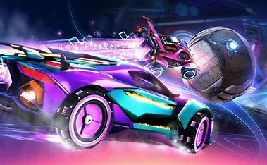

Aventurarnos en las mecanicas de Rocket League ya es algo mas complejo debido a que requieres de ciertos conocimientos asi como experiencia y habilidades que vas adquiriendo con el tiempo, pero con mucha practica puedes lograr lo que sea, asi que acontinuacion te presentamos de las mecanicas mas importantes que puedes aprender para ser todo un profesional
Este juego no solo se trata de remtar y tapar la pelota si no tambien de controlar la pelota, la cual sige las leyes de la fisica la cual te permite conforme vas conduciendo fluir con el balon, este moviento es de suma importancia ya que con el podras hacer muchas mas jugadas espectaculares.
Es una mecanica curiosa ya que parece aleatoria, pero si la controlas podras despejar y tirar a porteria a la vez.
Consiste en golpear el balon mientras esta pegado a una pared e incluso el piso, tienes que golpearlo con
fuerza con el frente del carro cerca del centro del balon pero un poco cargado hacia la dirección contraria a la
que quieres que vaya el balon.
Se trata de controlar e balon en el aire, es decir elevar el balon desde el piso o una pared.
Esto se logra con el turbo y mientras controlas el balon levantarlo un poco, despues de eso volar hacia
arriba con dirección al balon y golpeandolo suabemente con dirección a porteria, finalmente cuando lo creas
oportuno golpear fuerte hacia la direccion mas conveniente que quieras.
Estas son especiales de cada equipo, son pases o distracciónes las cuales llevan como objetivo meter gol.
Para estas jugadas nesitas hablar con tu compañero para poder sincronizar sus movimientos y poder lograr su
objetivo.